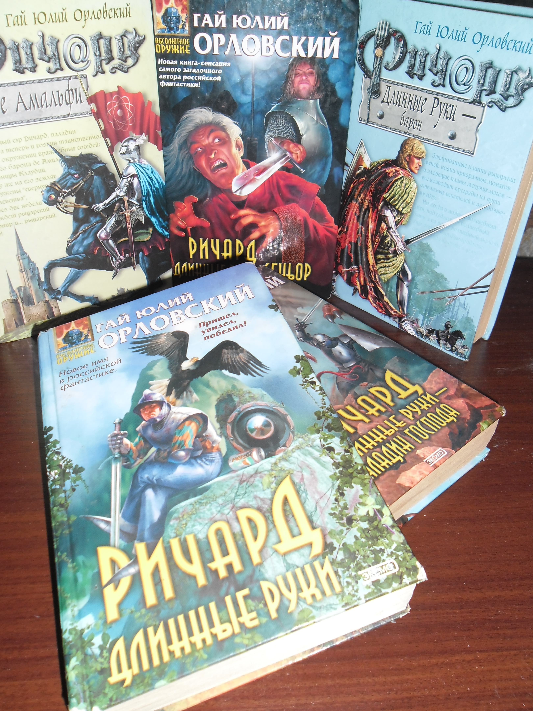

<!DOCTYPE html><html/><title>Донат</title><meta http-equiv="content-type" content="text/html; charset=utf-8"/><meta name="description" content="Страница пожертвования, нужна для людей, желающим помочь сайту или автору материально - &quot;Моё творчество в Ваших руках!&quot; "/><meta name="viewport" content="width=device-width, initial-scale=1"/><link rel="stylesheet" href="css/style.css"/><link rel="stylesheet" href="https://cdnjs.cloudflare.com/ajax/libs/font-awesome/4.7.0/css/font-awesome.min.css"/><script>document.oncontextmenu = cmenu; function cmenu(){ return false; }</script><!-- Body --><body lang="ru-RU" class="unselectable"/><noscript/></noscript><!-- Main content: shift it to the right by 210-275 pixels when the sidebar is visible --><div class="malloc-main malloc-auto" style="margin-left:270px"/><!-- main{ --><div class="malloc-row malloc-padding-64"/><!-- text{ --><!-- Донат --><div class="malloc-threequarter malloc-padding"/><!-- { --><h1 class="malloc-center malloc-theme-main malloc-card-4 malloc-auto malloc-cursive">Донат</h1><!-- Обо мне --><p style="font-size: 14px" class="malloc-padding-small"/>В самом начале, позвольте представиться. Меня зовут Гусев Пётр Сергеевич — программист, разработчик сайта, автор статей.<br/>Расскажу две истории, из которых вы узнаете немного обо мне и о пожертвовании.<br/>Первая о том, зачем <b/>собираю на бумажные книги</b>, а вторая про мой <b/>компьютер</b>.</p><!-- На книги --><p class="malloc-padding-small"/><h2 class="malloc-text-teal malloc-cursive">На книги</h2>За компьютером проводил ±90 процентов своего времени. Это около четырнадцати часов и более.<br/>Надо было с этим, что то делать. Поразмыслив, нашел решения, которые сократили мое общение с компьютером больше, чем в половину. Вот как это сделал:<ul/><li/>Телевизор (YouTube, фильмы и тому подобное) я заменил чтением бумажных книг. Тем самым сократил общение с компьютером на несколько часов в день и параллельно создал информационную диету. Конечно в первую неделю тянуло, что то посмотреть, но потом втянулся в чтение.</li><li/> Читая бумажную книгу, чувствую себя иначе. Могу почитать возле окна, на кухне, в зале, на улице, ходить, стоять. А за компьютером, сидишь часами.</li><li/>Мне проще воспринимать информацию из бумажной книги, а скорость чтения выше. А еще могу быстро перемещаться по страницам и главам, что занимает считанные секунды.</li><li/>Стало возможным, когда отыскал нужные книги (например учебники по математике), весь день вообще не включать компьютер.</li></ul>Конечно мне предстоит, приобрести ещё множество книг. Все они разные и стоят по разному.<br/>Например:<br/><div class="malloc-padding-small"/>- &quot;Ричард Длинные Руки&quot; ±400 рублей. Это книги, которые ещё в тираже <a id="Book-Ричард" target="_blank" style="text-decoration:underline"/>(ссылка на издательство)</a>. С рук стоят дешевле, примерно от 100 рублей.<div class="malloc-auto" style="width:40.99999%; hight:40.99999%"/></div><br/>- Керниган, Ритчи: Язык программирования C от 1600 рублей.<a id="Book-C" target="_blank" style="text-decoration:underline"/>(ссылка на издательство)</a>.<br/>- По информатике Эндрю Тоненбаума от 1300 рублей.<a id="Book-Тоненбаума" target="_blank" style="text-decoration:underline"/>(ссылка на издательство)</a>.</div><br/>Прошу Вас принять участие в пожертвовании <b/>на книги</b>.<br/><div class="malloc-text-green malloc-padding-12" title="На книги"/><!-- для ПК --><object title="На книги" class="malloc-ad-desktop" data="https://yoomoney.ru/quickpay/shop-widget?writer=seller&targets=%D0%9D%D0%B0%20%D0%BA%D0%BD%D0%B8%D0%B3%D0%B8&targets-hint=&default-sum=49&button-text=14&payment-type-choice=on&mobile-payment-type-choice=on&hint=%D0%94%D0%B5%D1%80%D0%B6%D0%B8%20%D0%BD%D0%B0%20%D0%B1%D1%83%D0%BC%D0%B0%D0%B3%D1%83%20%D0%B8%D0%BB%D0%B8%20%D0%9E%D1%82%20%D1%87%D0%B8%D1%81%D1%82%D0%BE%D0%B3%D0%BE%20%D1%81%D0%B5%D1%80%D0%B4%D1%86%D0%B0&successURL=&quickpay=shop&account=410015474057891" width="500" height="221" allowtransparency="true" scrolling="no"/></object></div><div class="malloc-text-green malloc-padding-12 malloc-center" title="На книги"/><!-- для мобильников --><object title="На книги" class="malloc-ad-mobile" data="https://yoomoney.ru/quickpay/shop-widget?writer=seller&targets=%D0%9D%D0%B0%20%D0%BA%D0%BD%D0%B8%D0%B3%D0%B8&targets-hint=&default-sum=49&button-text=14&payment-type-choice=on&mobile-payment-type-choice=on&hint=%D0%94%D0%B5%D1%80%D0%B6%D0%B8%20%D0%BD%D0%B0%20%D0%B1%D1%83%D0%BC%D0%B0%D0%B3%D1%83%20%D0%B8%D0%BB%D0%B8%20%D0%9E%D1%82%20%D1%87%D0%B8%D1%81%D1%82%D0%BE%D0%B3%D0%BE%20%D1%81%D0%B5%D1%80%D0%B4%D1%86%D0%B0&successURL=&quickpay=shop&account=410015474057891" width="220" height="250" allowtransparency="true" scrolling="no"/></object></div></p><!-- На ноутбук --><hr/><p class="malloc-padding-small"/><h2 class="malloc-text-teal malloc-cursive" title="Ноутбук">На мечту</h2>Устаревшим может быть, что угодно. Про такой компьтер обычно говорят - &quot;Твой мамонт ещё живой?&quot;<br/>И они правы, хоть и хочется вставить словцо, мол он ещё...ах, ладно.<br/><br/>Моего &quot;толстого железного друга&quot; охватила и старость, и &quot;раковая болезнь DDR&quot;. В итоге компьютер остался с возможностями, которые не дают никаких возможностей.<br/><br/>Конечно, со временем, привык к тормозам и уже для меня, это стало нормальным. Но все же, два гига оперативной памяти, дают о себе знать. Иногда он задумываться о &quot;вечном&quot; прям во время компиляции, а зависание при написании кода, выработало у меня привычку моментально сохранять изменения или в некоторых моментах делать копии.<br/><br/>Вариант с ноутбуками, как рабочая машина, не расматривал всерьез никогда.<br>Cпустя годы понял, что очень сильно ошибался на их счет.<br/>Есть отличные Laptop'ы, которые мощнее многих Desktop'ов.<br/><br/>Дорогой и чуть ли не единственный вариант для меня, это <a class="malloc-hover-grey" href="https://www.apple.com/shop/buy-mac/macbook-pro/16-inch" target="_blank" title="сайт Apple">ноутбуки компании Apple</a>.<br/>Это моя <b>мечта</b>!<br><!------------->Прошу вас поучаствовать в пожертвовании на <b>ноутбук MacBook Pro 16-inch.</b><div class="malloc-text-green malloc-padding-12" title="На мечту"/><!-- для ПК --><object title="На книги" class="malloc-ad-desktop" data="https://yoomoney.ru/quickpay/shop-widget?writer=seller&targets=%D0%9D%D0%B0%20%D0%BC%D0%B5%D1%87%D1%82%D1%83&targets-hint=&default-sum=99&button-text=14&payment-type-choice=on&mobile-payment-type-choice=on&hint=%D0%94%D0%B5%D1%80%D0%B6%D0%B8%20%D0%BD%D0%B0%20%D0%B1%D1%83%D0%BC%D0%B0%D0%B3%D1%83%20%D0%B8%D0%BB%D0%B8%20%D0%9E%D1%82%20%D1%87%D0%B8%D1%81%D1%82%D0%BE%D0%B3%D0%BE%20%D1%81%D0%B5%D1%80%D0%B4%D1%86%D0%B0&successURL=&quickpay=shop&account=410015474057891" width="500" height="221" allowtransparency="true" scrolling="no"/></object></div><div class="malloc-text-green malloc-padding-12 malloc-center" title="На мечту"/><!-- для мобильников --><object title="На книги" class="malloc-ad-mobile" data="https://yoomoney.ru/quickpay/shop-widget?writer=seller&targets=%D0%9D%D0%B0%20%D0%BC%D0%B5%D1%87%D1%82%D1%83&targets-hint=&default-sum=99&button-text=14&payment-type-choice=on&mobile-payment-type-choice=on&hint=%D0%94%D0%B5%D1%80%D0%B6%D0%B8%20%D0%BD%D0%B0%20%D0%B1%D1%83%D0%BC%D0%B0%D0%B3%D1%83%20%D0%B8%D0%BB%D0%B8%20%D0%9E%D1%82%20%D1%87%D0%B8%D1%81%D1%82%D0%BE%D0%B3%D0%BE%20%D1%81%D0%B5%D1%80%D0%B4%D1%86%D0%B0&successURL=&quickpay=shop&account=410015474057891" width="230" height="250" allowtransparency="true" scrolling="no"/></object></div></p><div class="malloc-padding"/>Спасибо за помощь и поддержку!<br/>_<br/>С уважением,<br/>Malloc.RU</div></div><!-- } --><!-- Правый сайдбар { --><div class="malloc-quarter malloc-center malloc-container malloc-text-gray malloc-padding-64 malloc-ad-desktop" title="Новости"/><!-- Новости malloc.ru--><div class="malloc-center malloc-container malloc-text-grey malloc-card" title="Новости"/>Новости-Malloc.RU<textarea class="malloc-container malloc-theme-l1" title="Новости" id="news" lass="unselectable"/></textarea></div><!-- Date-time --><div class="malloc-center malloc-padding-16"/><small style="display:inline-block;" class="malloc-card malloc-container malloc-padding-small malloc-clock-theme"/><div id="mytime" style="display:inline-block; margin-right: 5px" title="Время"/></div>|<div id="mydate" style="display:inline-block; margin-left: 1px" title="Дата"/></div></small><br/><a href="https://time100.ru" title="Точное время" target="_blank"/>ccылка точное время</a><br/><a href="https://top.mail.ru/jump?from=3211268" target="_blank"/></a></div></div><!-- } Правый сайдбар --></div><!-- } text --></div><!-- } main --><!----><!-- Navbar --><div class="malloc-top"/><div class="malloc-bar malloc-theme-main malloc-top malloc-left-align malloc-large malloc-card-4"/><a class="malloc-bar-item malloc-button malloc-right malloc-hide-large malloc-hover-white malloc-large malloc-theme-l1" href="javascript:void(0)" onclick="malloc_open()"/><i class="fa fa-bars"/></i></a><!-- Top bar --><a href="index.html" class="malloc-bar-item malloc-button malloc-hover-white"/>главная</a><a href="articles-1.html" class="malloc-bar-item malloc-button malloc-hover-white"/>статьи</a><a href="about.html" class="malloc-bar-item malloc-button malloc-hover-white malloc-theme-l1"/>донат</a></div></div><!-- Sidebar --><nav class="malloc-sidebar malloc-bar-block malloc-collapse malloc-large malloc-theme-d1 malloc-card" id="mySidebar"/><a href="javascript:void(0)" onclick="malloc_close()" class="malloc-right malloc-xlarge malloc-padding-large malloc-hover-black malloc-hide-large" title="Закрыть"/><i class="fa fa-remove"/></i></a><!-- Соцсети --><hr class="malloc-border-green"/><div style="font-size:19px" class="malloc-center"/>Соцсети</div><div class="malloc-padding" style="font-size:15px"/><!--{--><a class="malloc-bar-item malloc-hover-green" id="myTelegram-sidebar"/>Telegram</a></div><!-- Помощь --><hr class="malloc-border-red"/><div style="font-size:19px" class="malloc-center"/>Донат</div><div class="malloc-padding" style="font-size:15px"/><!--{--><a class="malloc-bar-item malloc-hover-red" id="myDonat-sidebar"/>На книги</a><a class="malloc-bar-item malloc-hover-red" id="myDream-sidebar"/>На мечту</a><a class="malloc-bar-item malloc-hover-red" id="myQuestion-sidebar"/>Вопрос</a></div></nav><!-- Overlay effect when opening sidebar on small screens --><div class="malloc-overlay malloc-hide-large" onclick="malloc_close()" style="cursor:pointer" title="close side menu" id="myOverlay"/></div><!----><!-- Footer --><footer/><!-- Copyright --><div class="malloc-container malloc-padding-64"/></div><div class="malloc-container malloc-theme-l2"/><h6 class="malloc-center" title="Все права защищены">&copy; malloc.ru, 2021</h6></div></footer></body><!--JScript --><script src="js/about.js"/></script><script src="js/news.js"/></script></html>
